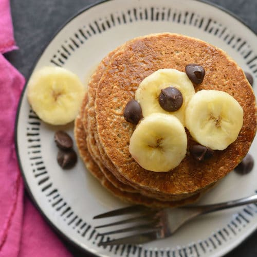

Simple High-Fiber Pancakes

Easy High-Fiber Pancakes
These high-fiber pancakes are made with chia seeds, ground flax seeds,
and bran meal. Top pancakes with butter, maple syrup, or powdered sugar.
Ingredients:
1 cup milk
2 large eggs
2 tablespoons vegetable oil
1 teaspoon vanilla extract
1 1/2 cups all-purpose baking mix
1/4 cup bran meal
1/4 cup white sugar
2 tablespoons ground flax seeds
1 tablespoon chia seeds
2 teaspoons baking powder
1 tablespoon butter, or as needed
Directions:
- Whisk together milk, eggs, oil, and vanilla together in a medium bowl.
- Whisk together baking mix, bran meal, sugar, ground flax seeds, chia seeds,
and baking powder together in a large bowl. Make a well in the center; add
1 tablespoon egg mixture into the well and whisk until well combined.
Continue adding and whisking in egg mixture, 1 tablespoon at a time,
until batter has thickened and takes 1 to 2 seconds to fall off the whisk.
- Heat a griddle over medium-high heat; grease with butter.
- Working in batches, drop 1/3 cup batter onto the griddle about 4 inches apart;
cook until bubbles form and the edges are dry, 3 to 4 minutes. Flip gently and
cook until browned on the other side, 2 to 3 minutes. Repeat with remaining batter,
greasing the griddle with more butter if needed.
Tips:
As pancakes finish, transfer to a baking sheet in the oven to keep warm.
If storing in the freezer, place pancake-sized sheets of waxed or parchment paper between
each pancake, then store them in a freezer bag.